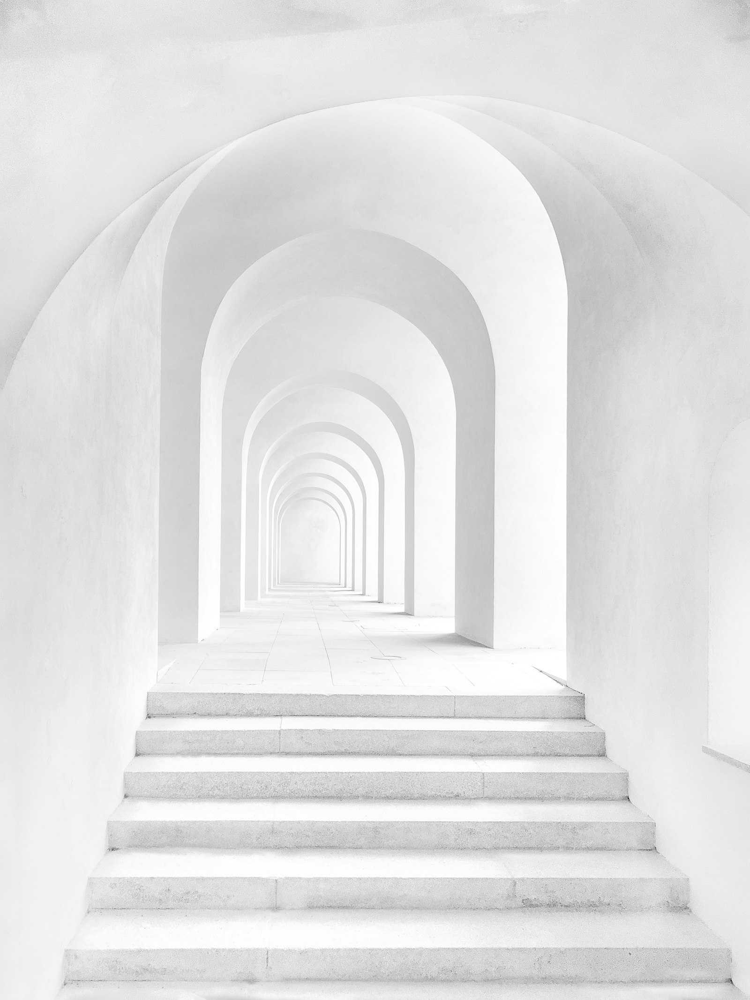
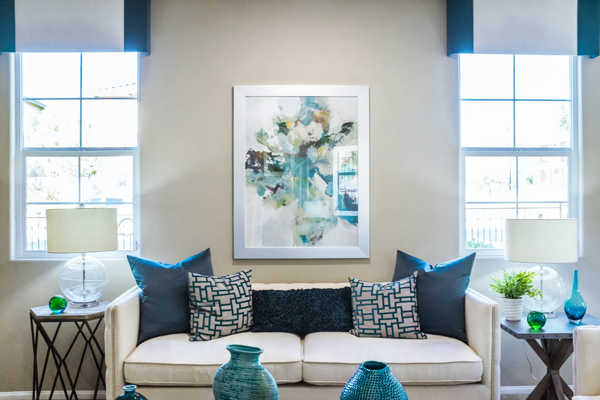

Material
Why we still build in timber.
On carbon, craft, and the case for engineered wood in civic buildings.
6 min read

The brief was deceptively simple: a family house that would feel as though it had always been part of the hillside. What followed were eighteen months of drawing, casting test panels, and refusing every shortcut that would have compromised the single idea at the centre of the project.
Concrete is an unforgiving material. Poured badly, it records every mistake permanently. Poured well, it holds light like stone and needs nothing added to it. We built three full-height sample walls on site before a single structural element was cast.
The result is a house with almost no applied finishes. The concrete is the wall, the structure and the surface at once. Timber appears only where the body meets the building — handrails, sills, the kitchen — and is left raw to weather alongside it.
Forty years of practice taught us that the buildings people keep are the ones that age honestly. Hollowell House is designed to look better in 2050 than it does today.

On carbon, craft, and the case for engineered wood in civic buildings.

Inside the studio's habit of redrawing a plan forty times before site.
How a single opening sets the temperature of an entire room.

You keep architecture and construction in one office. Why?
Because the moment you hand a drawing to someone who wasn't in the room when it was conceived, intent leaks out. We never let that happen.
What does a good handover feel like?
Quiet. If we've done our job, the client walks in and nothing surprises them — it's exactly the building we drew, on the day we promised.
Essays on building well, four times a year. No noise.